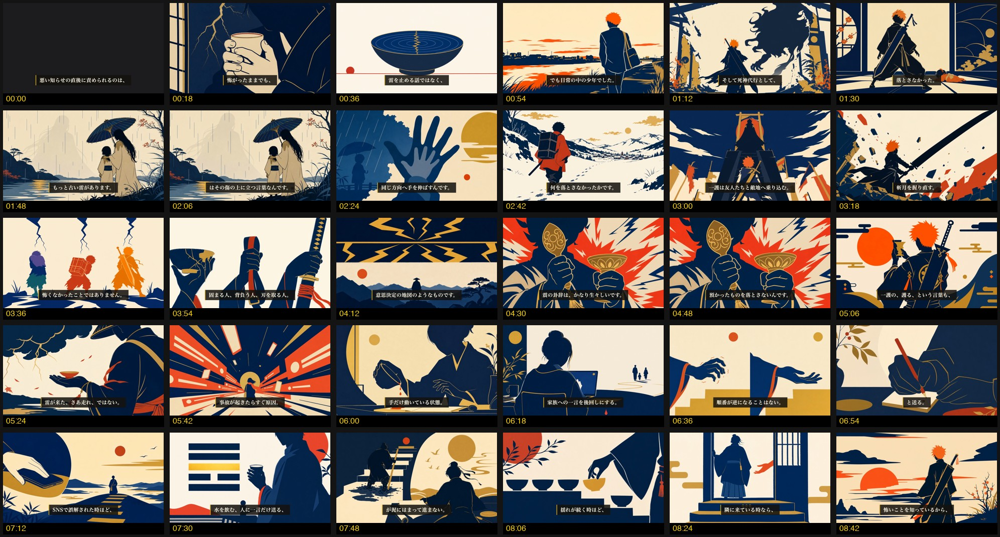

TL;DR ep37 全工程完了。機械ゲート4種（script / visuals / timing / mix）全PASS・fork採点=台本92点／タイトル94点・identity監査=一護 7/7・尺 543秒（9:03）・公開枠 2026-07-16 4:00 JST。
コンタクトシート30枚を目視確認済み — 黒フレーム・字幕欠落・映像崩れなし。このページで通し視聴の合否とタイトル最終決定をお願いします。
ステータス
PASS×4
script/visuals/timing/mix
releases/057/ep37_shin.mp4 （通し視聴はローカルで再生してください）
コンタクトシート（30枚・18秒間隔・機械+目視検証済み）

目視結果: 黒フレーム・字幕欠落・映像崩れなし。00:00は意図的な暗転タイトルカット（フック台詞入り）。一護のオレンジ髪シルエットは全編で一貫、07:30に六爻図（震の卦）を確認。Cフラット配色（紺/金/朱/生成り）も崩れなく安定。
タイトル3案（fork採点94点・推奨=B）
A
BLEACH黒崎一護は、怖くないから刀を取ったのではない【第三十七話・震】
採点者推奨
B
BLEACH黒崎一護が、家の壁が壊された夜に落とさなかったもの【第三十七話・震】
C
BLEACH黒崎一護は、震えを止めないまま刀を握れた【第三十七話・震】
判断してください
- 1
通し視聴の合否 — 品質ゲート5項目で確認: 冒頭30秒の緊張／「へえ」ポイント3つ／ビジュアル一貫性／自然な日本語（AI臭なし）／締めの余韻。OK / NG（要修正）でお答えください。
- 2
タイトルはどれにするか — A / B（推奨） / C、または別案。
- 3
NGの場合の箇所指摘 — タイムコード（コンタクトシートの秒数ラベル基準でOK）を添えて指摘してください。
通し視聴後、この3点を本人にご回答いただき次第、残工程へ進みます。
承認後の残工程
- サムネイル Tier A 生成
- 概要欄（description.txt / publish_kit.md）
- ショート2本切り出し（幕4「風刺の刃」＋冒頭Hook）
- 公開キット一式（タグ・シリーズ行・本編リンク）
- まとめて予約投稿（coord.sh claim-slot → yt-publish.mjs --publish-at）
essay-episode Step9〜11に対応。